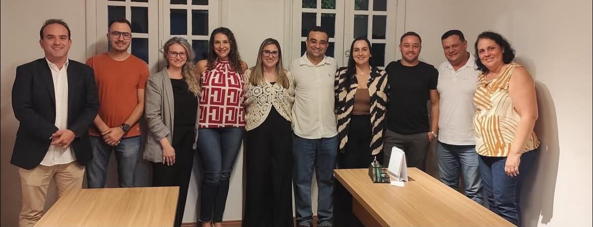
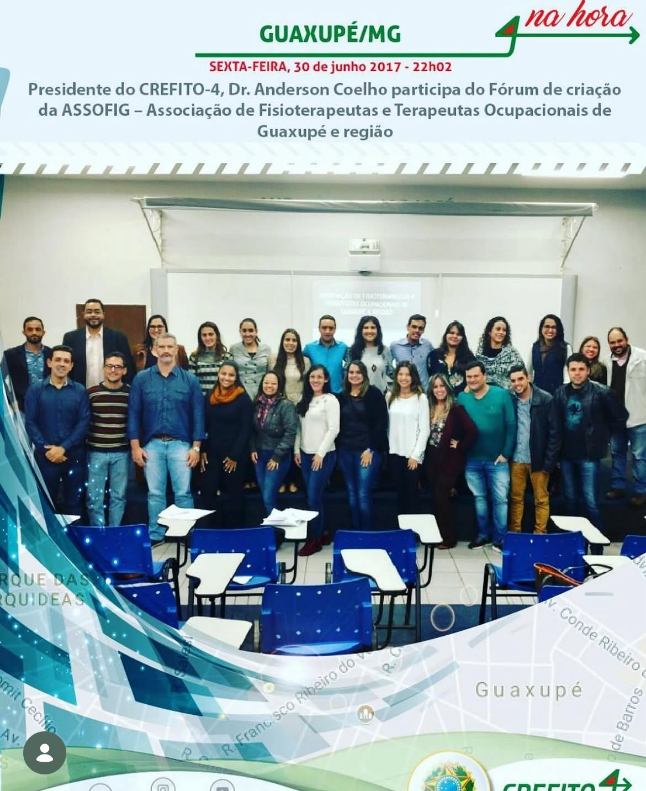

Fisioterapeutas
Profissionais habilitados que atuam em Guaxupé, nos municípios da região e em todo o Sul de Minas, em todas as áreas de especialidade.

A ASSOFIG conecta, representa e fortalece fisioterapeutas e terapeutas ocupacionais para gerar desenvolvimento profissional e impacto positivo na comunidade.

Fisioterapia Terapia Ocupacional
Terapia OcupacionalRepresentaçãoVoz ativa para os profissionais
CapacitaçãoConhecimento que transforma
ConexãoUma comunidade que aproxima
ValorizaçãoMais força para as profissões

A Associação de Fisioterapeutas e Terapeutas Ocupacionais de Guaxupé e Região é uma entidade civil sem fins lucrativos dedicada à união e à valorização das categorias.
Nascemos da mobilização regional para criar um espaço permanente de representação, cooperação, aprimoramento técnico-científico e defesa de interesses comuns.
MissãoFortalecer as profissões e aproximar profissionais, sociedade e instituições.
VisãoSer referência regional em representatividade, formação e integração profissional.
Para profissionais e futuros profissionais de Guaxupé, dos municípios da região e de todo o Sul de Minas que acreditam na força do coletivo.
Profissionais habilitados que atuam em Guaxupé, nos municípios da região e em todo o Sul de Minas, em todas as áreas de especialidade.
Profissionais habilitados que atuam em Guaxupé, nos municípios da região e em todo o Sul de Minas, em todas as áreas de especialidade.
Acadêmicos de Fisioterapia e Terapia Ocupacional de Guaxupé, da região e do Sul de Minas interessados em conexão, desenvolvimento e futuro profissional.
Profissionais que assumiram o compromisso de conduzir a ASSOFIG com diálogo, transparência e presença regional.

Composição conforme ata da Assembleia Geral Extraordinária de 13 de abril de 2026.
Estruturas independentes que apoiam uma gestão responsável e conectada à ciência.
Acompanha a gestão financeira, examina contas, documentos e demonstrações, emitindo pareceres para apoiar a boa governança.
Contribui com diretrizes técnicas, atualização profissional, formação continuada e iniciativas baseadas em evidências.
Acompanhe encontros, parcerias e ações que movimentam nossa comunidade profissional.
Encontro ofereceu suporte técnico e alinhou ações para aproximar e valorizar profissionais.
Carregando próximos eventos...
Estamos disponíveis para orientar profissionais, estudantes, parceiros e a comunidade.

Selecione seu perfil para acessar.
Informe o e-mail usado no cadastro. Se ele estiver registrado, enviaremos as instruções para criar uma nova senha.
Use sua senha atual ou inicial para criar uma nova senha. Ela deve ter no mínimo 6 caracteres, ser diferente da senha atual e coincidir com a confirmação. Não é obrigatório usar letra maiúscula, número ou caractere especial.
Preencha seus dados. A diretoria entrará em contato para validar sua inscrição.